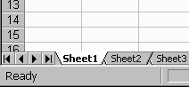
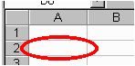
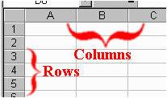
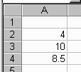
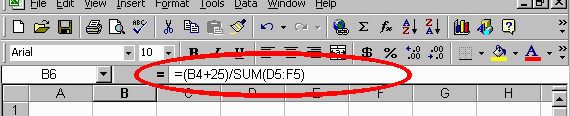

|
Physics Laboratory |

|
Excel Tutorial #1 |
|
Menu E |
Terminology |
2. Arithmetic F |
Let us begin our Excel tutorial with a discussion of the terminology that we will use throughout the tutorial. It will be helpful if you have your copy of Excel open while reviewing these pages.

A worksheet is one page of the Excel spread sheet document. When using Excel in conjunction with your labs, you will most likely use one worksheet per laboratory. The tabs at the bottom of the spread sheet tell you on which worksheet you are working. The image to the right shows that worksheet #1 is active.

A cell is one block within the worksheet. It is in the cell that you will type formulas, insert data and display information like table headings or notes to your instructor. You can change the color, size and border of each cell.

Each cell is identified by its unique column and row heading. Excel refers to columns with letters (A through IV, for a total of 256 columns) and refers to rows with numbers (1 through 65536). These letters and numbers are called row and column headings and are shown in gray in the image to the left. Each cell can be referenced by entering the column letter followed by the row number of the desired cell. For example, the encircled cell in the above image is known as cell A2, because the cell lies at the intersection of column A and row 2.

To refer to a range of cells, enter the reference for the cell in the upper-left corner of the range, a colon (:), and then the reference to the cell in the lower-right corner of the range. The image at the right shows three numbers in column A. The reference to these cells is defined as (A2:A4).
A formula is an equation that performs operations on
worksheet data.
Formulas can perform mathematical operations, such as addition and
multiplication, or they can compare worksheet values. Formulas can
refer to constants, or other cells on the same worksheet. While
using Excel in conjunction with the physics labs, you will create
your own formulas as well as use predefined formulas that are built-in
to the Excel program.

Each formula is entered and edited on the formula bar, located near the top of the spread sheet. The above image shows the formula bar encircled. As an example, the equation in the formula bar adds 25 to the value in cell B4 and then divides the result by the sum of the values in cells D5, E5, and F5.
You can also use constants in your formulas. These constants
can be numbers (2, 365 or 3.14159), predefined constants (PI( )
or EXP(1)), or references to a constant defined within worksheet.
Microsoft Excel contains many predefined, or built-in, formulas,
which are known as functions. Functions can be used to
perform simple or complex calculations. The most frequently
used function is the SUM function, which is used to add the numbers
in a range of cells.
If you have a question or comment, send an e-mail to
.
|
Menu E |
2. Arithmetic F |
Copyright © 2000, Clemson University. All Rights Reserved.
This page was created by
.